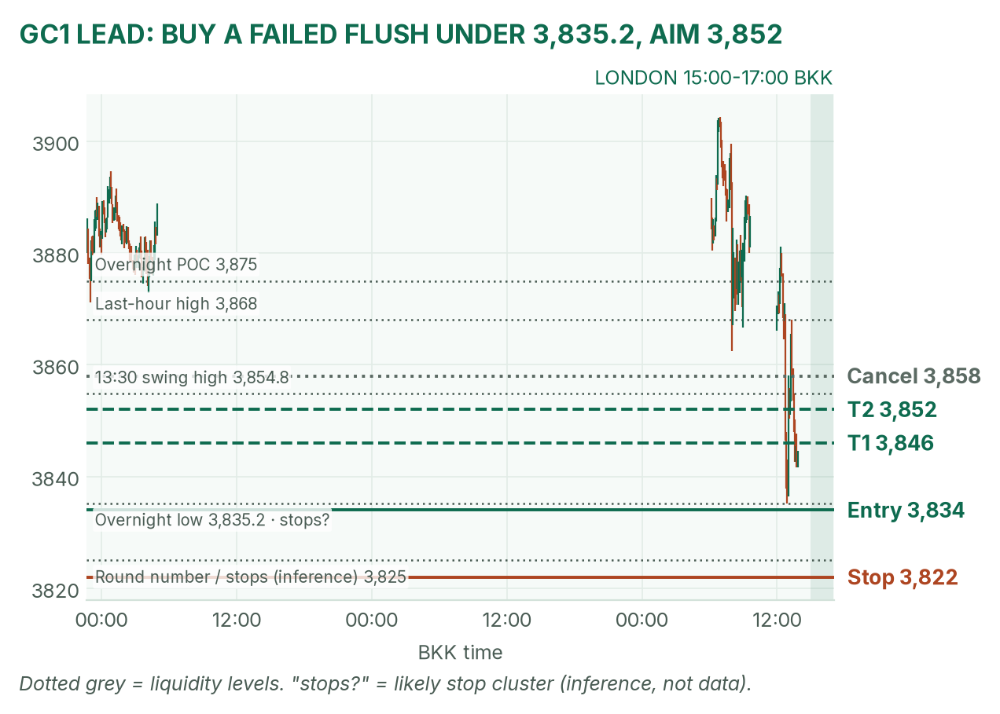
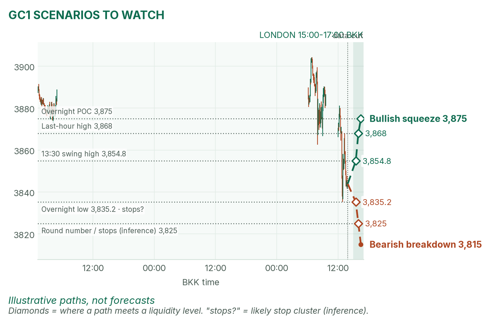
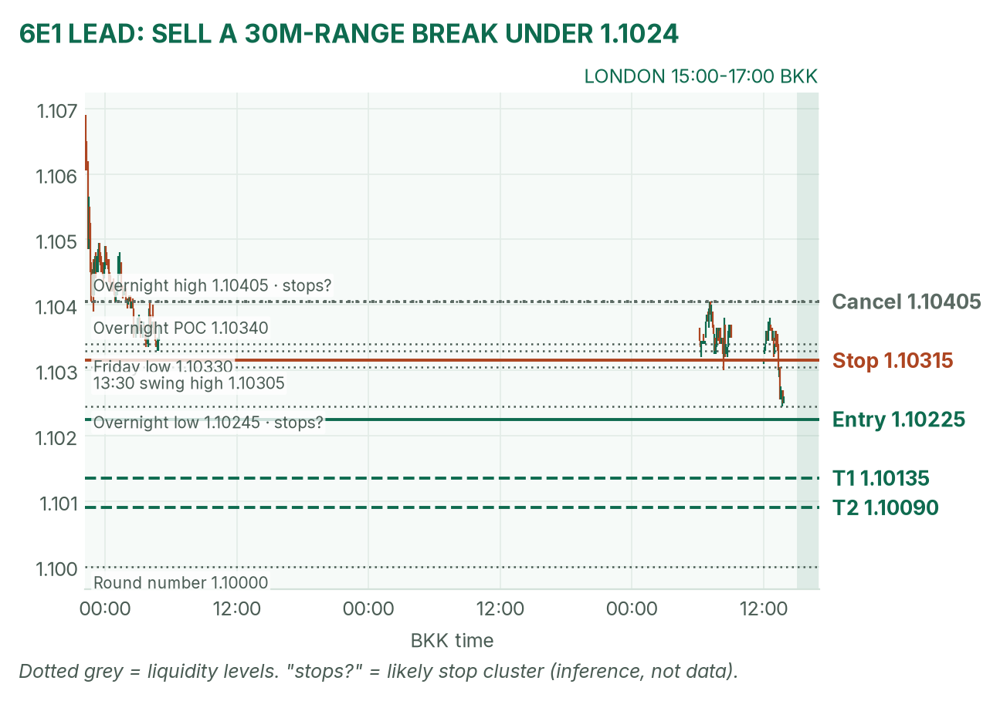
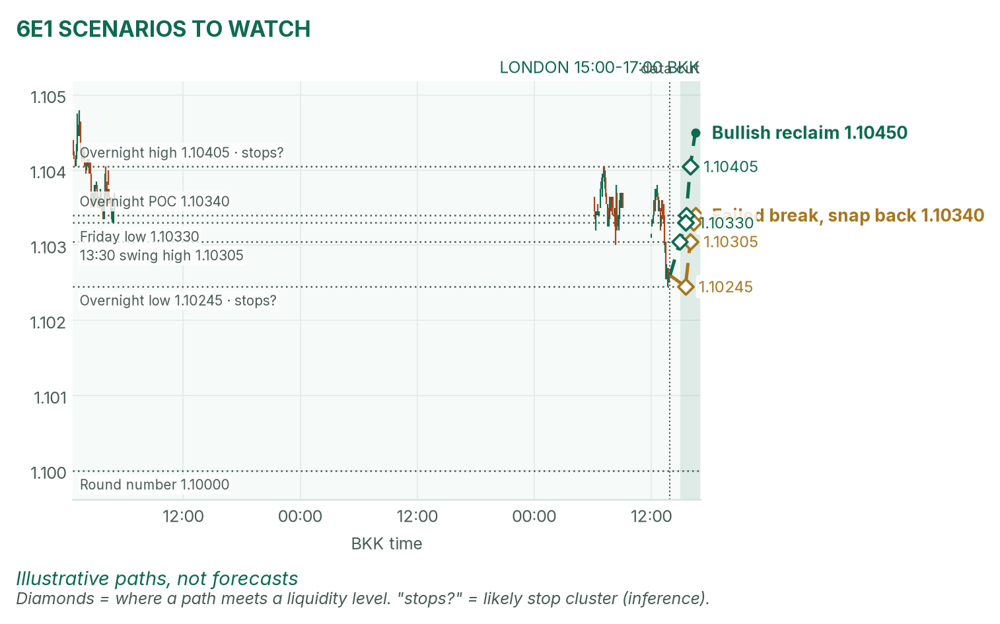

Gold slid to 3,835 on Fed-hike fears and the euro sits on its overnight low. Both are pressing the floor into London.
Window 15:00–17:00 BKK (UK on GMT). Data cut 13:55 BKK: GC 3,843.9, 6E 1.1026 (Dec contracts, last completed 5-minute bar). Backup data again: TopstepX refused login, so levels come from Yahoo Finance futures bars (about 10 minutes delayed). Levels only, flat by 16:55. Ideas, not advice. April's pre-London brief (~13:10 BKK) was read.
Summary
GC: buy only a failed flush under 3,835.2, entry near 3,834, stop 3,822, targets 3,846 and 3,852. About 30% once filled. It fights the trend.
6E: sell a break under 1.10225, stop 1.10315, targets 1.10135 and 1.1009. About 35%, with the dollar.
Fed's Barr speaks at 17:00, right at the window close. Be flat by 16:55.
The market story
The bigger weight for our two is the Fed: markets price a 92% chance of a December hike, the 10-year yield is 5.141%, and the dollar index is near a 19-month high (April's brief, CNBC, CME FedWatch).
Gold pays no interest, so higher rates make it costlier to hold. It popped to 3,904.3 at the reopen, then sold off all morning to 3,835.2, below Friday's 3,871.1 low. That is close to a trend day (a day that moves one way and rarely looks back). The euro broke under Friday's 1.1033 low and sits on its 1.10245 overnight low. My read: both lean down; gold is stretched, the euro is not.
News (BKK)
Time
Event
Forecast
Prior
Read
17:00
Fed's Barr on AI and financial stability
speech
n/a
At the window close. Hawkish lifts the dollar, hurts gold. No-trade zone 16:55–17:02.
20:30
US Empire State factory index
19.0
25.5
After the window. Hot means higher yields, bad for gold.
Source: April's brief (Federal Reserve, TD Economics). No release falls inside the window.
Levels to watch
Level
GC
6E
Friday high / low
3,927.2 / 3,871.1
1.1086 / 1.1033
Overnight high (since 06:00)
3,904.3
1.10405
Overnight POC (busiest price)
3,875
1.1034
Overnight value area (about 70% of trading)
3,839–3,883
1.1033–1.1037
Last-hour high / low
3,868.0 / 3,836.5
1.1036 / 1.10245
Overnight low
3,835.2
1.10245
Typical London range (last 3, median)
about 16 points
about 16 pips
Gold (GC1)
Bias: down, but stretched, 42 points under Friday's settle. The London gold rule: mark the 15:00–15:30 range and fade its edges back toward value. The 3,875 POC is too far for two hours, so I aim lower. My volatility model expects roughly 3,834 to 3,850.
The trade: mean-reversion buy
Entry
3,832–3,836 (plan 3,834), after 15:30, only on a drop below the range and the 3,835.2 overnight low that closes back above it on the 5-minute chart
Stop
3,822, under the 3,825 round number where sell stops likely sit (my inference)
Targets
1R partial 3,846 · full target 3,852 (1.5R), just under the 3,854.8 swing high
Cancel
Gold trades at 3,858 before any flush, or no fill by 16:30
Probability
~30%, an estimate. Basis: in 42 sessions (Aug–Oct) GC London range fades worked best (not statistically significant); buying into a falling market shades it down.
Why: a dip under an obvious low that snaps back is a liquidity grab. No reclaim, no trade. On a trend day the flush often just keeps going. April partly agrees: she sees gold "under the Fed's thumb", near a one-year low.

GC 5-minute bars into the 13:55 cut. The buy sits just under the overnight low.

Illustrative paths, not forecasts.
Scenarios to watch
Bearish breakdown: a 15m close below 3,835.2 with no reclaim. Aims for 3,825, then 3,815.
Bullish squeeze: a 15m close above 3,854.8. Aims for the 3,868 last-hour high, then the 3,875 POC.
Euro (6E1)
Bias: down, with the dollar. The euro lost Friday's low and the overnight value area is a thin 4 pips, so a break should travel. The 6E London rule is to trade breakouts of the 15:00–15:30 range. A pip is 0.0001.
The trade: bearish range breakdown
Entry
Sell stop 1.10225 after 15:30, just under the 1.10245 overnight low (use the 30m range low minus 2 pips if it is lower)
Stop
1.10315, back above the 13:30 swing high
Targets
1R partial 1.10135 · full target 1.1009 (1.5R), above the 1.1000 round number
Cancel
A trade above 1.10405 before the fill, or no break by 16:30
Probability
~35%, an estimate. Basis: 6E London range breakouts averaged +0.31R over 26 sessions; the target is about one median London range away.
Why: sell stops cluster under the overnight low (my inference), and the rule follows the break. April is neutral: "the euro is parked".

6E 5-minute bars into the 13:55 cut. The entry sits just under the overnight low.

Illustrative paths, not forecasts.
Scenarios to watch
Mean reversion: a break under 1.10245 that fails back inside. Aims for 1.10305, then the 1.1034 POC.
Bullish reclaim: a 5m close back above 1.1033 (Friday's low). Aims for the 1.10405 overnight high.
NQ (not traded): about 27,744 at the cut, near its 27,658 overnight low after Asia's chip sell-off.
Before you click
ORB bases. GC London: 15:00–15:30 range, fade to POC. GC NY: 20:20 COMEX open until a 2-minute candle's volume drops below half the first two's average, fade to POC. 6E London: 15:00–15:30 range, trade breakouts. NQ NY: 21:30–21:35 range, trade breakouts.
Checklist. Room to max loss? Daily rules OK? No release within 30 minutes? With the bias? At a marked level? Setup tagged? Entry, stop, 1R partial, target set? Calm, not chasing?
Reset (60 seconds). Hands off the mouse. Breathe in 4, hold 4, out 6, five times. Name the feeling in one word. Say the plan aloud. "Eager" or "frustrated"? Wait 5 minutes.